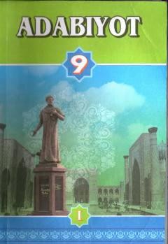

A99-sinf o'quvchilari uchun mo'ljallangan adabiyot fani darsligi.
Mazkur darslik umumiy o'rta ta'lim maktablarining 9-sinf o'quvchilari uchun mo'ljallangan bo'lib, badiiy adabiyot asoslari, mumtoz va zamonaviy o'zbek adabiyoti namunalari haqida ma'lumot beradi. Kitobda Alisher Navoiy, Zahiriddin Muhammad Bobur, Abdulla Qodiriy va Cho'lpon kabi buyuk ijodkorlarning asarlari tahlil qilingan. Darslik o'quvchilarning estetik didini o'stirish va adabiy tafakkurini boyitishga xizmat qiladi.